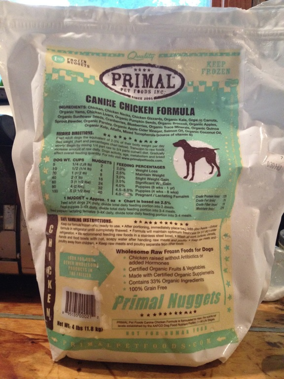
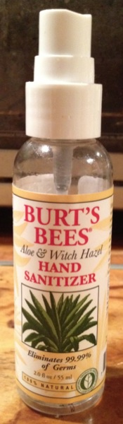
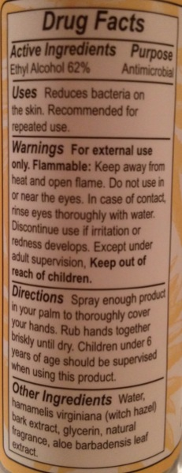

Submitted by Bill St. Clair on Thu, 02 Aug 2012 22:11:41 GMT
<==
Products
==>
My excitement about The Auto Moto, and the letdown on realizing that it was made in China, caused me to investigate an upgrade for my 1996 Honda CH80 Elite. Today, I started the process of purchasing a 2013 Honda PCX 150. Should be able to pick it up tomorrow, assuming Honda likes my credit. Yay!
Picked it up the day after I made this post. Lots of photos at billstclair.com/pcx.
2 comments
Edit post
Add post
Submitted by Bill St. Clair on Sat, 28 Jul 2012 15:25:12 GMT
<==
Products
==>
The Auto Moto is a 150cc tricycle that gets 83 MPG and will go 55 MPH. It has a partial roof, giving more protection than a typical motorcycle faring. Continuously variable transmission. Seats two, up to 375 pounds. Front disc and rear drum brakes. Leans into corners leaving both rear wheels on the ground. No special motorcycle license required in many states. 72-liter lockable trunk. Two lockable glove compartments. Integrated stereo system with MP3 player plug. Lots of colors. Facebook page. $3,800.
There's a red one at the Lawn & Tractor store 5 miles from my house. I think I'll be upgrading my 80cc scooter real soon now.
6 comments
Edit post
Add post
Submitted by Bill St. Clair on Tue, 26 Jun 2012 12:58:02 GMT
<==
Products
==>
We've been feeding our two aging miniature schnausers canned dog food for many years. They were happy with Merrick for a while, but now eat it only reluctantly. We discovered last weekend, at Pawsh Buddies in Great Barrington, MA, Primal Raw Frozen Formulas. Costs about half again as much as the canned food, but the dogs wolf it down. Their web site has a store locator.

2 comments
Edit post
Add post
Submitted by Bill St. Clair on Sun, 24 Jun 2012 03:15:52 GMT
<==
Products
==>
Due to my daughter's medical needs for the Lyme and other tick-borne diseases for which we've been treating for the past three years, I have a daily need for hand sanitizer. Most of them are isopropyl (wood) alcohol based, and smell and feel awful. I discovered at Guido's a hand sanitizer from Burt's Bees that I like much better. It's Ethyl (grain) Alcohol based, smells good, and sprays on as a mist, which makes it feel much better than the thick goo of the standard brand. I've been using their farmer's friend hand salve for years.


Burt's Bees Hand Sanitizer
Ingredients: Ethyl Alcohol (62%), water, hamamelis virginiana (witch hazel),
bark extract, glycerin, natural fragrance, aloe barbadensis leaf extract
Add comment
Edit post
Add post